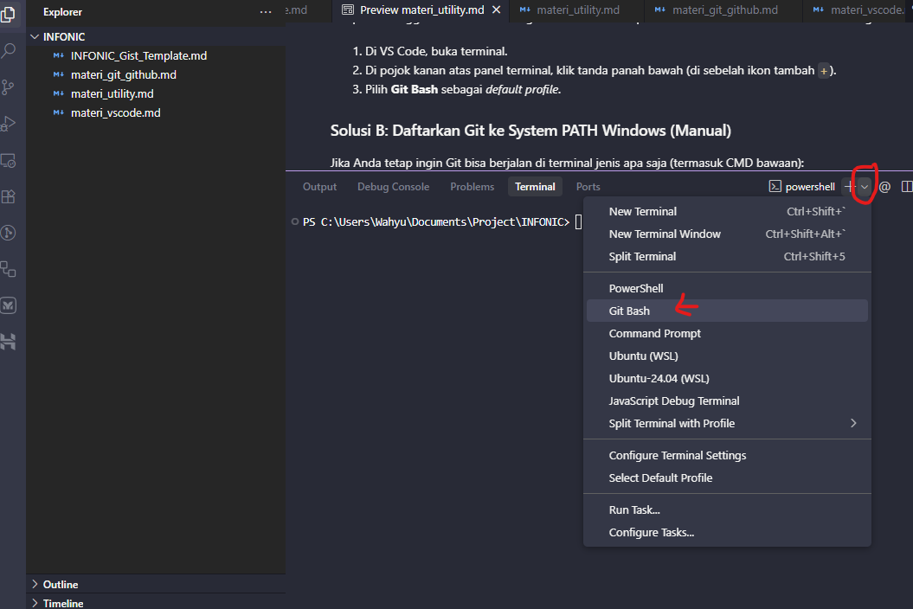

1. Cara Membatalkan File yang Tak Sengaja Terubah (Rollback)
Terkadang kamu tidak sengaja mengedit file template (Tugas/NIM-NAMA.md), file teman lain, atau file sistem seperti index.html. Berikut solusi mengembalikan ke versi asli berdasarkan tahapan yang sedang terjadi:
Skenario A: File Berubah Tapi BELUM di-commit (Working Tree / Staged)
Paling Mudah
Kondisi
Kamu baru saja mengetik/mengubah file di VS Code dan belum menjalankan
git commit.
Solusi
1. Mengembalikan 1 file tertentu ke versi semula:
# Mengembalikan file template yang tak sengaja terubah
git restore Tugas/NIM-NAMA.md
# Atau jika menggunakan Git versi lama (< 2.23):
git checkout -- Tugas/NIM-NAMA.md2. Membatalkan jika sudah sempat git add . (Unstage):
git restore --staged Tugas/NIM-NAMA.md
git restore Tugas/NIM-NAMA.md3. Mengembalikan SELURUH perubahan yang belum di-commit:
git restore .
Skenario B: Sudah Terlanjur di-commit Tapi BELUM di-push
Sedang
Kondisi
Kamu sudah menjalankan
git commit -m "..." sehingga perubahan tersimpan di riwayat lokal laptopmu, tetapi belum menjalankan git push origin main.
Solusi
Batalkan commit terakhir tanpa menghapus file tugas yang sudah kamu buat:
# Membatalkan commit terakhir (file tugas tetap aman, status kembali ke uncommitted)
git reset --soft HEAD~1
# Kemudian kembalikan file template yang salah diedit
git restore Tugas/NIM-NAMA.md
# Lalu buat commit ulang yang bersih
git add .
git commit -m "Submit tugas osjur - "
Skenario C: Sudah Terlanjur di-commit DAN di-push ke GitHub
Perlu Hati-hati
Kondisi
File yang salah ubah sudah terkirim ke repository GitHub pribadimu (kamu sudah
git push).
Solusi 1 (Paling Aman & Bersih)
Ambil kembali isi file template asli dari repository pusat/upstream lalu commit perbaikan:
# Ambil versi asli file template dari commit sebelumnya
git checkout origin/main -- Tugas/NIM-NAMA.md
# Commit perubahan perbaikan ini dan push ke GitHub-mu
git add Tugas/NIM-NAMA.md
git commit -m "fix: revert accidental template changes"
git push origin mainSolusi 2 (Force Reset ke GitHub Pribadi)
# Batalkan commit terakhir di lokal
git reset --soft HEAD~1
git restore Tugas/NIM-NAMA.md
# Commit ulang file yang benar
git add .
git commit -m "Submit tugas osjur - "
# Timpa riwayat di GitHub fork pribadimu
git push origin main --force Catatan: Penggunaan
--force hanya aman dijalankan pada repository fork pribadi milikmu sendiri. Jangan pernah menjalankan force push di repo bersama/utama!2. Mengatasi Error: "git is not recognized..."
Error: git is not recognized as an internal or external command
Penyebab
Sistem operasi Windows kamu belum tahu di mana letak aplikasi Git terinstal — Path belum terdaftar secara global.
Solusi A
Gunakan Git Bash (Paling Cepat & Direkomendasikan)
Memilih Git Bash sebagai default profile terminal VS Code
- Di VS Code, buka terminal (Ctrl+`).
- Di pojok kanan atas panel terminal, klik tanda panah bawah (di sebelah ikon tambah
+). - Pilih Git Bash sebagai default profile.

Memilih Git Bash sebagai default profile terminal VS Code
Solusi B
Daftarkan Git ke System PATH Windows (Manual)
- Buka Start Menu Windows → ketik
Environment Variables. - Klik Edit the system environment variables → pilih Environment Variables...
- Di kotak System variables, klik variabel Path → Edit.
- Klik New, tambahkan:
C:\Program Files\Git\cmd - Klik OK pada semua jendela dan Restart VS Code.
3. Mengatasi Merge Conflict (Konflik Penggabungan)
CONFLICT (content): Merge conflict in ...
Penyebab
Dua orang mengedit baris kode yang sama persis di file yang sama (misalnya mengedit file template yang sama alih-alih membuat file terpisah).
Cara Resolusi
- Buka file yang berkonflik di Visual Studio Code.
- VS Code akan otomatis menampilkan tombol opsi:
Accept Current Change(simpan perubahanmu)Accept Incoming Change(ambil perubahan dari repo luar)Accept Both Changes(simpan kedua-duanya)
- Pilih opsi yang sesuai, hapus baris marker
<<<<<<< HEADdan>>>>>>>. - Simpan file (Ctrl+S), lalu commit:
git add . git commit -m "fix: resolve merge conflict" git push origin main
4. Repository Fork Ketinggalan (This branch is out of date)
Fork Ketinggalan Beberapa Commit dari Repository Kabim/Utama
Penyebab
Panitia atau Kabim baru saja melakukan update materi atau memvalidasi tugas teman lain di repository utama, sementara repository forkmu masih versi lama.
Solusi Cepat
Cara 1 (Melalui Web GitHub - Paling Mudah):
- Buka repository forkmu di browser GitHub.
- Tepat di bawah tombol hijau Code, klik tombol Sync fork.
- Klik Update branch.
- Di laptopmu, jalankan
git pull origin maindi terminal VS Code untuk menarik update terbaru ke laptop.
6. Error Umum Lainnya & Solusinya
fatal: not a git repository (or any of the parent directories)
Penyebab
Kamu menjalankan perintah Git (seperti
git status) di folder luar atau sebelum masuk ke dalam folder hasil clone.
Solusi
Jalankan
cd INFONIC_2026 untuk masuk ke folder repository terlebih dahulu, atau buka langsung folder tersebut di VS Code (File → Open Folder).
Terjebak di Editor Terminal (Vim / Nano)
Penyebab
Saat melakukan
git commit tanpa menyertakan pesan (-m "pesan"), terminal otomatis membuka editor Vim.
Solusi
Tekan tombol Esc di keyboard → ketik
:q! → tekan Enter. Kemudian ulangi commit dengan menyertakan pesan: git commit -m "Submit tugas osjur - NIM".